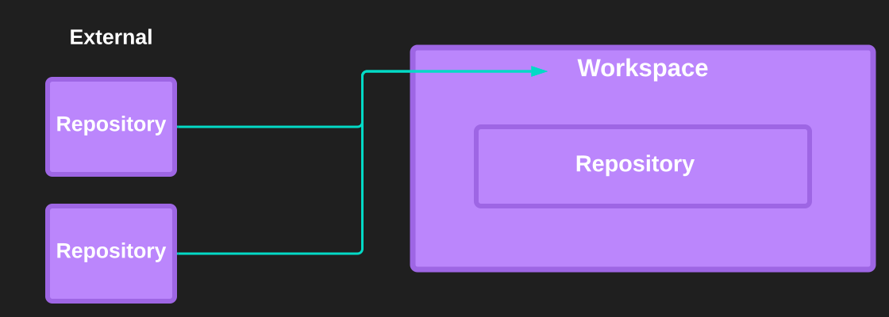
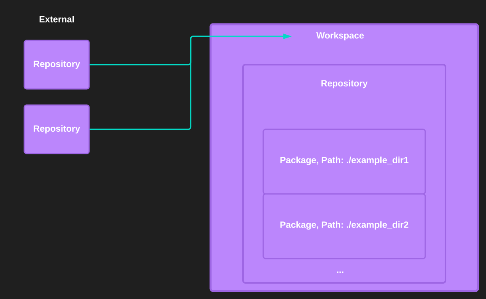
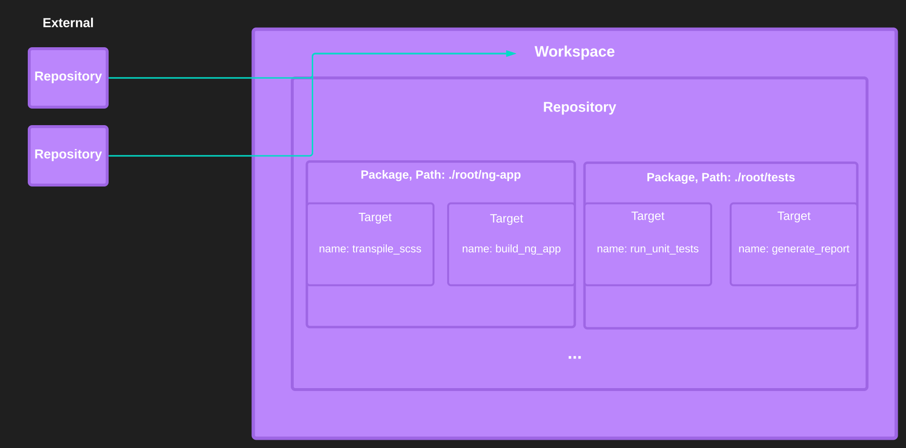
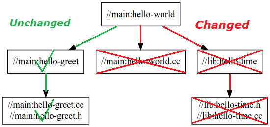
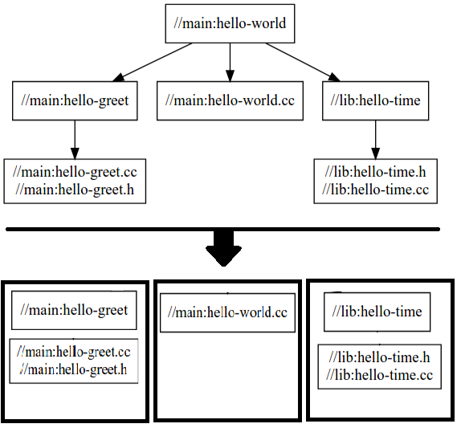
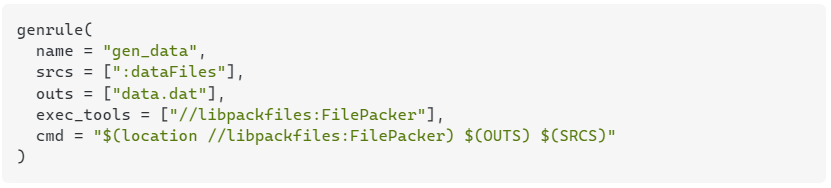

vSAN UI and Bazel
Overview
- What is Bazel?
- What Bazel does?
- How Bazel does it?
- What is vBazel?
- How we use Bazel to build the vSAN UI?
What is Bazel?
Build tool supporting multiple languages and building for multiple platforms.
What Bazel does?
Define build actions
Analyze dependency relations
Build in the most efficient way
How Bazel does it?
Definition of terms...
Workspace
Refers to the root directory which contains all source files + external dependencies configuration.
A workspace directory contains WORKSPACE.bazel file which defines the main repository and also describes references
to external repositories required for the build.

Repository
Directory containing source code and build instructions
The WORKSPACE directory is the root of the main repository, also called @.
Other, external repositories are defined in the WORKSPACE.bazel file.
Repository itself could be regarded as a set of packages...

Package
Subdirectory in a repository which has build instructions defined
A package directory includes all files in its directory, plus all subdirectories beneath it and contains BUILD.bazel file which defines targets...

Target
Definition of an action. Most targets are one of two principal kinds:
Rule
A function that has files as input and output.
Chaining between rules is supported. In other words,
one rule input files could be another rule output files.

File
Could be source files or generated files as an output from some rule.
Label
Identifier for target

Why so many configurations?

The simple answer is Bazel wants you to split your monolitic build into smaller pieces (targets) as much as possible. But why?
Concepts...
Action Graph
The Action Graph is Direct Acyclic Graph (DAG) representing dependency relations between targets.

Effective Caching
At each incremental build, Bazel analyzes and reconstructs
the Action Graph in order
to find the minimum subforest of targets it must rebuild.

Parallel Execution
Independent targets could be executed in parallel.

Stages of the Bazel build process
-
Loading phaseLoad and evaluate all BUILD.bazel files that are needed for the build. The execution of the BUILD.bazel files simply instantiates rules (each time a rule is called, it gets added to a graph).
-
Analysis phaseThe code of the rules is executed (their implementation function), and actions are instantiated. An action describes how to generate a set of outputs from a set of inputs. In other words, the Analysis phase takes the graph generated by the Loading phase and generates an action graph.
-
Execution phaseActions are executed, when at least one of their outputs is required. If a file is missing or if a command fails to generate one output, the build fails.
Syntax of Bazel
Bazel build files are written in Starlark(dialect of Python).

What is vBazel?
How we use Bazel to build the vSAN UI?
Prerequisites...
Setup new Perforce Workspace
Keep in mind that bazel depends on the file/directory structure of the source,
so you must use the exact mappings above.
Configure GitLab SSH Access
- Generate public/private key pair using ssh-keygen
- Configure the ssh connection to gitlab in ~/.ssh/config file
- Add your public key in your account info at gitlab.eng.vmware.com
Configure the Bazel Workspace
By running vbazel it would:
- Generate WORKSPACE.bazel file
- Register gobuild dependencies in the WORKSPACE.bazel
- Configure external repositories in the WORKSPACE.bazel
- Override some default build settings in the WORKSPACE.bazel
Build the vSAN UI plugin
vbazel build //vsan-mgmt-ui/h5-plugin/h5-vsan-ui